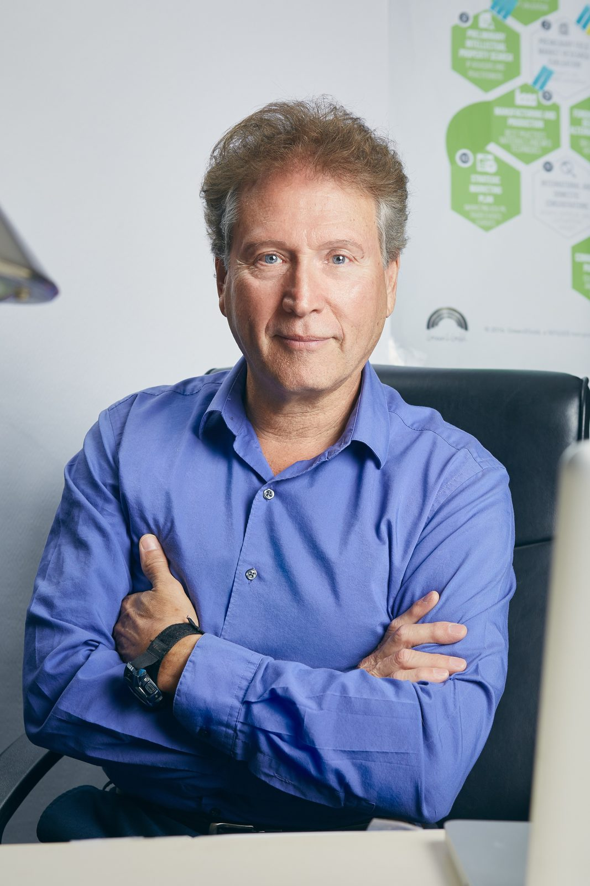

Environmental Education Group has a long rich history.
Formed in 1970 alongside Earth Day, invited to the first UN Conference on the Human Environment in 1972, and entering a new era with new understandings and new commitments.
Over 50 years of independent research
EEG was formed in 1970 alongside Earth day, by like-minded individuals in many sectors coming together with a shared inspiration and collective aspiration to bring about a strong awareness of our individual effects on our planets balance and harmony.
“In 1972 EEG became a tax-exempt educational and scientific research foundation with a global mission. In that same founding year, EEG participated and contributed to the First United Nations International Conference on the Human Environment held in Stockholm, Sweden.” — Prof. Alan Tratner, Founder
Milestones
- 1970EEG is formed alongside the first Earth Day.
- 1972EEG becomes a tax-exempt educational and scientific research foundation, and is invited to the First International United Nations Conference on the Human Environment in Stockholm, Sweden. The Exhibit is still on permanent display at the Forum site of the conference.
- 2017EEG begins establishing non-profit businesses, from restaurants to bakeries, to handy man services.
- 2025EEG launches the Legal Self-Defense Academy.

Scroll through some of our history here.
Our beginnings
The Environmental Education Group (EEG) was established in 1970, alongside the first Earth Day, by a group of individuals who shared a common vision of creating a more balanced and harmonious relationship between people and the planet. With a foundation in independent research, environmental awareness, and collective responsibility, EEG began exploring ways to address environmental challenges and promote a deeper understanding of humanity's impact on the natural world. In 1972, EEG was invited to participate in the First United Nations Conference on the Human Environment in Stockholm, Sweden, marking an important milestone in its journey toward environmental education and global awareness.
EEG today
Today, Environmental Education Group continues its mission of harmonizing environments on every level by connecting environmental awareness with personal, social, and community well-being. EEG recognizes that environmental challenges are interconnected with human behavior, individual choices, and the systems in which people live. Through educational initiatives, workshops, seminars, community engagement, and nonprofit ventures, the organization seeks to address the root causes of environmental and societal imbalances. Its initiatives, including Green2Gold, support the development of practical solutions that encourage sustainability, cooperation, and a more harmonious relationship between people and the environment.
Looking toward the future
Looking toward the future, Environmental Education Group envisions a world where individuals, communities, and organizations work together to create lasting environmental and social harmony. EEG aims to expand its educational initiatives, strengthen community-based solutions, and encourage a deeper understanding of the interconnectedness of all life. By supporting innovative projects, developing sustainable nonprofit ventures, and inspiring individuals to become agents of positive change, EEG strives to move beyond temporary solutions toward meaningful, long-term transformation. Its ultimate vision is to help build a healthier, more balanced, and sustainable planet for present and future generations.
Or listen to Prof. Alan Tratner on GreenisGood Radio.
EEG Expresses the Next Steps in World Helping Plans
EEG was formed in 1970 alongside Earth day, by like-minded individuals in many sectors coming together with a shared inspiration and collective aspiration to bring about a strong awareness of our individual effects on our planets balance and harmony.
Our independent research began over 50 years ago and we are deeply humbled by the new levels and dimensions of understanding that are reaching us as we dive deeper and deeper in the search for real security and stability for our people and our planet day after day, year after year.
We have come to realize environmental harmony on our planet is not a one dimensional situation. It is not exclusive to the science of climate change nor is it dependent on our politics. Real long term environmental harmony is personal. It is all inclusive. It's spiritual, it's mental, it's physical. It is an individual and collective progressive process that continues to expand and continues to create deeper and deeper levels of harmony with every one and every thing on every level and in every way.
We are coming to realize with more and more surety and confidence, that every place on our planet is unique. Every person individual. Therefore, from that perspective it is easy to see the needs for harmony in every situation is different. And the requirements for deeper harmony and the plan to obtain it, is fundamentally different in all people and in all situations.
EEG is completely inspired and totally dedicated to spreading the tools of harmony and creating and supporting atmospheres that reflect harmony. In the last decade EEG has been working diligently internally and beginning the process of helping to inspire more and more of our future leaders towards new concepts and perspectives of harmony.
It is becoming obvious that more and more of us are realizing, that if we are going to help bring balance to our planet, we are going to have to take steps to bring balance to ourselves. And this is what we are doing collectively and individually in EEG. Therefore, we are practicing what we preach and leading by example.
Every year, our headquarters stands once again heartbroken because of another monumental scar on our society from violent and deadly mass shooting and insensitive attacks on our local innocent youth, families and communities. In our organizations efforts to help to bring about changes and awareness to the causes of these dramatic and traumatic heartbreaking losses, we find that we cannot ignore the growing realizations that it is our individuals gross misconceptions and the wars that go on in our own minds that drive individuals to mass shooting, potential nuclear wars, rioting, looting, gross greed and mass killing, cheating people on any level, as well as all man made disharmonies. We see clearly that it is the individual that is fighting with themselves, that goes into a school or a bar to fight with anyone and everyone. And we now realize when the war stops within all individuals, it obviously stops everywhere.
Because I believe wholeheartedly in the ultimate goals of our EEG organization, I strived to be the president so I can begin to initiate a deeper concern for individuals in everyday life. Helping as many individuals as possible to weed out those potentially disastrous issues and heinous responses that are more times than not, lying dormant just below the surface. Personally, I'm committed to carry the flag of individual harmony to the everyday workplace.
In 2017 we began establishing non-profit businesses from restaurants to bakeries, to handy man services, to every sector we can get into. And this is just the beginning. We are setting up these non-profit businesses in our communities, making ourselves available and working with people on the ground level. Dealing with possible extreme issues as well as everyday problems with plans to bring about changes and more prosperous harmonious productive solutions.
We are positive without a doubt there is a lot more to stopping those internal struggles and internal wars, then for example going into a quiet place to meditate or pray, which of course are nice things to do. Eventually we have to come out of those quiet places and into the wars and struggles that are still in our world that we will have to deal with again and again. Having an hour or so of feeling at peace doesn't necessarily change anything other than possibly our state of mind while we are in those temporary peaceful situations. Though those potentially peaceful experiences are great, and they have gone on for centuries, they nonetheless have never proven to be the complete answer.
It of course is undeniable when anyone actually finds harmony, that it comes with the ability to find solutions. We can then automatically become an example of those possibilities and their potential atmospheric changes. And so consequently, when we are uniting or united with ourselves, there can be no opposition within us. And no one to fight. There may be other warring consciousnesses around us, but instead of bringing more war to them, our contribution becomes more automatically solution driven because of our united consciousness example.
Beginning in 2025, we are launching a Legal Self-Defense Academy, for those interested in getting rid of any weakness, and begin the process to defend themselves and potentially any and all of our environments more efficiently and more effectively.
Heal the roots, not just the branches.
Mission
We find environmental non profits are looking for ways of healing the branches. It is our goal to heal the roots while transplanting evolving perspectives; replacing the shallow short lived solutions and motivations; with long term strong standing complete harmonious structures; building unified wisdom & forever improving environments.
Vision
“More and more of us are understanding, that if we are going to help bring balance to our planet, we are going to have to take steps to bring balance to ourselves.”
Lielle Arad, excerpt from “The Sustainable Planet & the Total Vantage Point”
“Bringing our planet into balance is our future and is the direction to take for personal as well as collective success.”
Philosophy of harmony
Even if one aspect of ourselves is seemingly in harmony with a particular experience, unless we are in tune with all of our dimensions, we are limited and we are incomplete.
If we didn't have a need or desire for complete harmony, there would be no reason to have the different dimensions we experience.
Read “What do we mean by complete harmony?” →When a root reaches in time a certain place in the ground, it may touch water, the source of it's life. In our creation & evolution, we have knowingly or unknowingly, like that root, sought deeper perspectives, seeking answers to our ultimate questions.
Now, for the first time in our created and evolved history, that water, those answers, and that guidance are upon our roots.
From a subconscious position known as the Final Dimension, our roots touch that water, and we can hear from the source of our life.
Noticed and welcomed all over the world
EEG was invited to the First International United Nations Conference on the Human Environment in Stockholm, Sweden in 1972. The Exhibit is still on permanent display at the Forum site of the conference.
So, along with helping individuals and businesses, our organization is also being noticed and welcomed all over the world and is being acknowledged for making profound and world changing projects. As an organization ourselves, our historical track record shows us continuing to expand throughout the years helping the world in more and more long term, effective and efficient ways.
EEG was established in 1972 with a highly experienced board of directors and extensive advisory board with international expertise, to carry out multiple missions to protect and sustain human civilization and its interaction with the planet.
Our educational tour has been presented to
- Sustainatopia, Century City
- Metropolitan Water District, Dorothy Chandler Pavilion
- Earth Day San Francisco
- Saddleback College
- University of California, Santa Barbara
- Los Angeles Central Library, Mark Taper Auditorium
- Inland Empire Asian Business Conference
- International Green Industries Hall of Fame
- UC Merced
- Eye on the Environment, CBS Studios
Verified nonprofit profile:

EEG 2021 Officers, Directors & Advisors
Thank You to Our Founding Honorary Directors & Consultants
EEG was established in 1972 with a highly experienced board of directors and extensive advisory board with international expertise, to carry out multiple missions to protect and sustain human civilization and its interaction with the planet.
Alumni of Board of Directors
Environmental Education Group, Inc.
- Mailing address1176 Tourmaline Dr.
Thousand Oaks, CA 91320 - Phone(310) 994-9858
- Nonprofit status501(c)(3) nonprofit organization, EIN 23-7252042. Donations are tax-deductible.
Have a question?
Ask about our Personal and Community Workshops, request further chapters of The Thinker Exposed, or send us your ideas and ways you might want to be involved or help.
Contact EEG